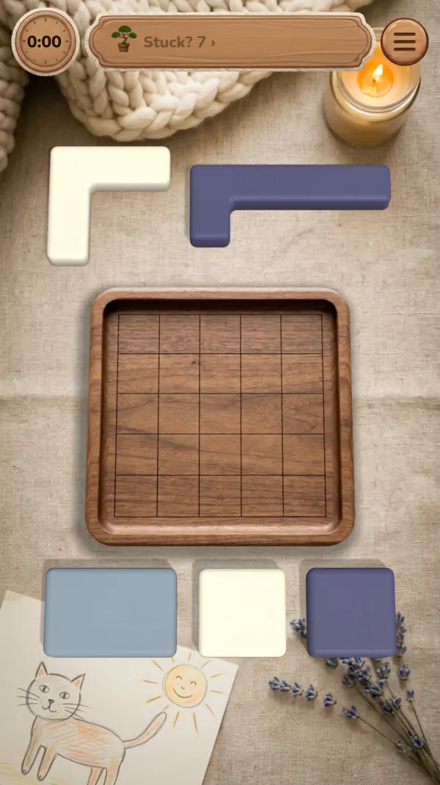

Un jeu de Coffee Beans Studio
Koselig
Un casse-tête douillet sur plateau de bois. Placez toutes les pièces sur le plateau — et prenez votre temps.
Bientôt sur l’App Store et Google Play
Un casse-tête, sans se presser
Koselig est un casse-tête numérique sur plateau de bois. Les pièces sont posées sur la table autour du plateau : vous les prenez, les tournez et les placez jusqu’à ce que chaque case soit remplie.
Les niveaux vous guident le long d’une carte, des petits plateaux jusqu’au plateau complet. Il y a plus d’une façon de remplir un plateau — et la plus stricte de toutes, où deux pièces de même couleur ne se touchent jamais.
Vous doutez que la position ait encore une issue ? Touchez Sans issue ? : le bonsaï vérifie pour vous, après une courte vidéo que vous choisissez de regarder — ou tout de suite si vous avez acheté Sans pub.

Captures d’écran



Ce que vous y trouverez
Trois tables
Chêne, lin et noyer — chacune avec sa petite vie tranquille : une bougie, le thé qui fume, la lavande dans la brise.
Plateaux et pièces
Plateaux en pin, noyer, pierre, acier, laiton, olivier et cerisier. Pièces : peinture, bois, pierre, métal et terrazzo.
Une carte des niveaux
Des premiers pas en douceur sur de petits plateaux, puis le casse-tête complet.
Le bonsaï
Votre allié pour la vérification Sans issue ? — et il fleurit quand vous réussissez un niveau.
Sauvegardes
Trois emplacements pour les positions auxquelles vous voulez revenir.
Sept langues
Français, English, Español, Deutsch, Italiano, Polski et Русский.
Franc jeu sur la pub
Ni bannière ni publicité qui surgit à l’écran. Une courte vidéo n’est diffusée que si vous demandez une vérification Sans issue ? et choisissez de la regarder. Un seul achat facultatif, Sans pub, permet de vérifier sans vidéo.
iPhone et Android · Français, English, Español, Deutsch, Italiano, Polski, Русский